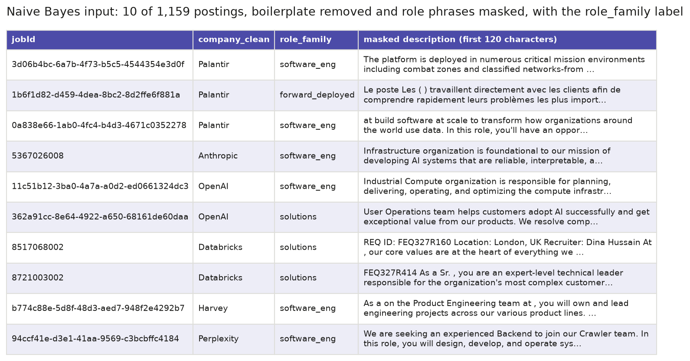
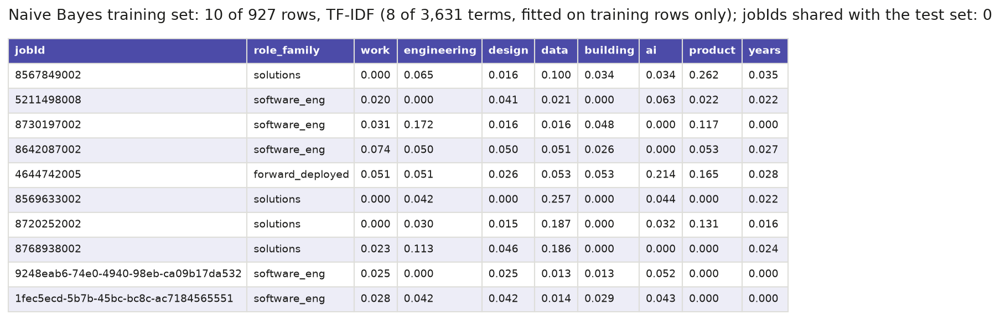
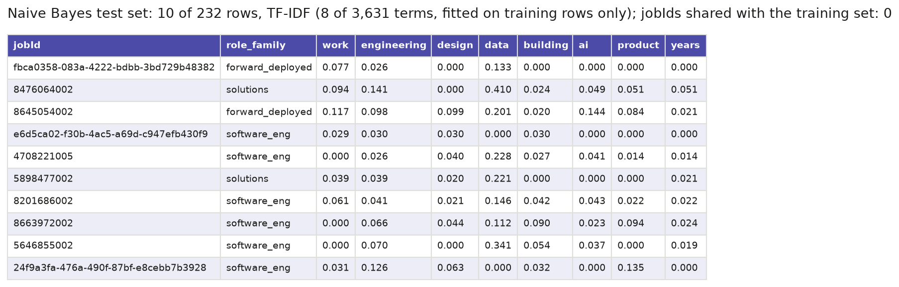
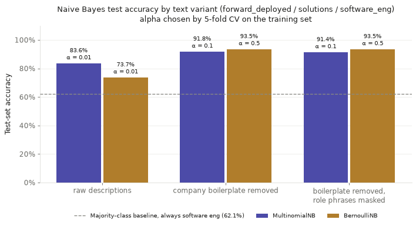
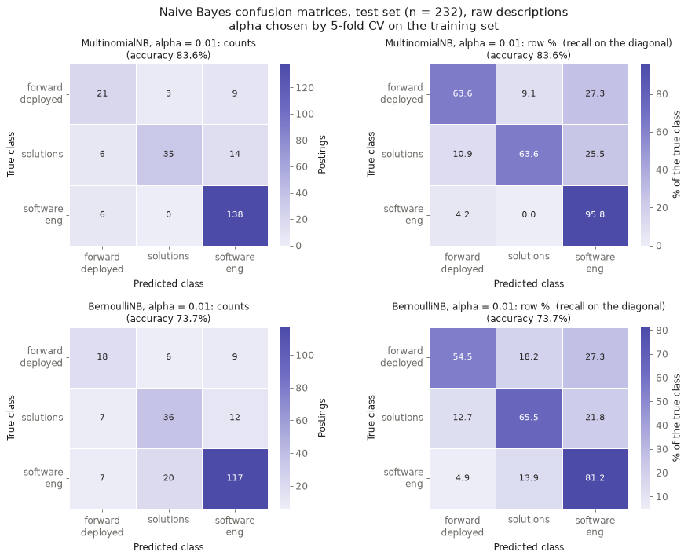
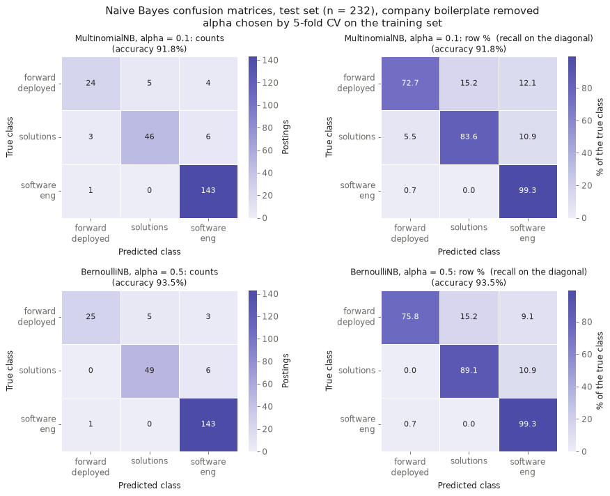
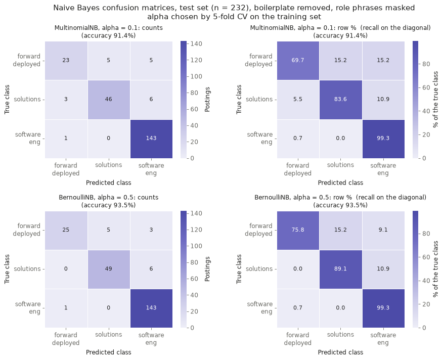
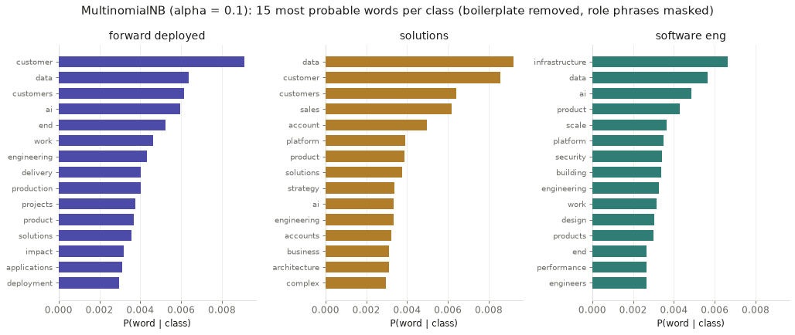
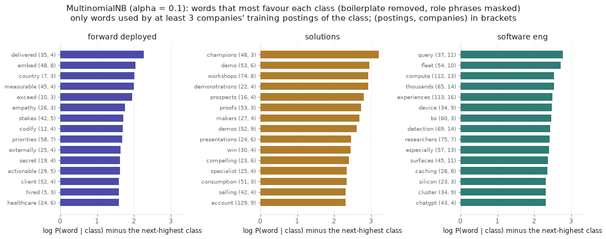

Naive Bayes
Overview
Naive Bayes is a supervised method for classification. It learns from examples whose class is already known and then predicts the class of new examples. It is built on Bayes’ theorem, which turns the question “how likely is this class, given these features?” around into “how likely are these features, given this class?”. The second question can be answered by counting in the training data. For each class, the method takes the class’s share of the training data, called the prior, multiplies it by the probability of each feature within that class, and picks the class with the highest result.
The word “naive” refers to one simplifying assumption: within a class, every feature is treated as independent of every other. For text, this means each word is scored on its own, as if the words in a document had nothing to do with each other. That is clearly not true, but the method still works well in practice, because it only has to rank the classes in the right order, not get every probability exactly right. It is fast, needs little training data and copes with thousands of features. This is why it is widely used for spam filtering, sorting news articles or support tickets by topic, judging whether reviews are positive or negative, and as a quick first model that other models can be compared against.
Two practical details matter. Multiplying many small probabilities gives numbers too small for a computer to store, so the logarithms of the probabilities are added up instead, which picks the same winner. And a word that never appears in a class’s training documents would get a probability of zero, which would rule that class out no matter what else the document says. Smoothing fixes this by adding a small amount, called alpha, to every word count before the probabilities are worked out. With alpha = 1 this is known as Laplace smoothing, and smaller values change the counts less.
There are several kinds of Naive Bayes, which differ in how they describe each document. Multinomial Naive Bayes, the standard version for text, works with how often each word appears, so a word used three times in a document counts three times. It is usually given word counts, but it also accepts weighted counts such as TF-IDF. Bernoulli Naive Bayes describes each document only by which words it contains, as a list of yes-or-no values, so a word used once and a word used ten times count the same. Unlike the multinomial version, it also uses the words that are missing. For every word in the vocabulary that a document does not contain, it multiplies in the chance that a document of that class leaves the word out. This makes Bernoulli Naive Bayes suited to short texts and to any data made of yes-or-no features. A third kind, Gaussian Naive Bayes, is used for continuous measurements such as heights or prices.
This project uses Naive Bayes to ask whether the text of a job posting can tell three closely related technical jobs apart: forward deployed engineering, solutions roles such as solutions engineer and solutions architect, and software engineering. The Introduction describes the forward deployed engineer as one of the fastest-growing jobs at AI companies, a role that mixes engineering with working alongside customers. If the descriptions of these jobs can be told apart, they are different kinds of work. If the model keeps mixing them up, the new role overlaps with the older ones. Both the multinomial and the Bernoulli versions are fitted and compared.

![Two panels. Left: a line chart of the running log-probability for class A, with prior 0.6, and class B, with prior 0.4, as the log prior and the log probabilities of goal, match and vote are added in turn. Class A ends at minus 6.02 and class B at minus 6.70, and a note says the highest total wins, class A. Right: bars of the probability of each word in class A without smoothing and with smoothing: goal 6 out of 20 against 7 out of 25, match 8 out of 20 against 9 out of 25, and vote 0 out of 20 against 1 out of 25. A note says vote was never seen in class A, so without smoothing class A can never win.](figures/nb_concept_2.png)
Data Preparation
Naive Bayes is a supervised method, so it can only learn from labelled data. Every row needs the right answer attached, which here is the posting’s role family. The model learns which words go with which label, and a row without a label gives it nothing to learn from and nothing to check its predictions against. Only postings with a known role family can therefore be used. The role family was given to each posting earlier in the project from its job title, using keyword rules that are checked in order, with the first match deciding. A title containing “forward deployed” or “FDE” is labelled forward_deployed. A title containing “solutions engineer”, “solutions architect”, “solutions consultant”, “delivery”, “deployment strategist” or “technical account” is labelled solutions. A title containing “software engineer”, “backend”, “frontend”, “infrastructure”, “platform engineer” or “SRE” is labelled software_eng. The model never sees the title. It only reads the job description, so it has to work out the role from how the work is described.
The data starts from the same 4,294 cleaned job postings used on the Clustering page. As there, repeated copies of the same job were removed, leaving 3,718 postings. Only the three role families compared here were kept, which gives 1,159 postings: 721 software_eng, 275 solutions and 163 forward_deployed. The classes are uneven, and software_eng alone makes up 62% of the data.
Each description was prepared in three versions. The first is the raw text. The second removes company boilerplate with the same rule as the Clustering page: any sentence that appears in at least 10% of one company’s postings, and in at least 3 of them, is dropped, along with company names. This roughly halves the typical description, from about 5,950 to about 3,150 characters. The list of boilerplate sentences was found across all 3,718 postings, as on the Clustering page, so it also saw the postings later used for testing. Only the choice of which sentences to remove was made this way, and everything the models learn comes from the training set. The third version also masks the role. Because the labels come from job titles, and many descriptions repeat their title, a model could score well just by finding the title in the text. To prevent this, the posting’s own title and 24 role phrases, such as “forward deployed”, “FDE”, “solutions architect”, “software engineer” and the abbreviations “SA” and “DSA”, were removed. This changed 865 of the 1,159 descriptions but took out only a few words from each, a median of 38 characters.
The 1,159 postings were then split at random into a training set of 927 postings (80%) and a test set of 232 postings (20%). The model learns from the training set only. The test set is kept aside and used once, at the end, to measure how well the model labels postings it has never seen. The split was stratified, so each role family has the same share in both sets: 130 forward_deployed, 220 solutions and 577 software_eng postings in training, and 33, 55 and 144 in testing. The two sets are disjoint, meaning no posting is in both, and this was checked by job ID. This matters because a model tested on postings it was trained on is being asked questions it has already seen the answers to, so its score would overstate how well it works on new data. The same split is used for every model on this page.
Finally, the text has to become numbers. Naive Bayes in scikit-learn, the Python library used here, only accepts numeric input, so each description is turned into one row of numbers with one column per word. For Multinomial Naive Bayes the numbers are TF-IDF weights, as on the Clustering page: a word scores high in a posting when it is used often there but is rare across postings. For Bernoulli Naive Bayes each number is 1 if the word appears in the posting and 0 if it does not. Common English words were dropped, and so were words found in fewer than 5 training postings or in more than 80% of them. Every word also has to contain at least one letter, so bare numbers are ignored. In this data the numbers that stood out most were salary bands, mostly from one company, such as $182,000 to $250,208, and these say who is hiring rather than what the job is. The vocabulary was learned from the training set alone and then applied to the test set, so words that appear only in test postings are ignored. On the masked text this gives 3,631 word columns.

Labelled input: ten of the 1,159 postings, each with its role family label and the first 120 characters of its masked description. Company names and role phrases have been taken out, which leaves gaps such as “As a on the Product Engineering team at ,”. The label is what the model learns to predict, and the description is the only thing it reads.

Training set: ten of the 927 training postings, after the masked text has been turned into TF-IDF weights. Only eight of the 3,631 word columns are shown, the eight words found in the most training postings. A weight of 0 means the posting does not use that word. The label stays next to the numbers, because the model learns from both.

Test set: ten of the 232 test postings, turned into numbers with the vocabulary learned from the training set. No job ID appears in both sets. The model only sees the word columns here, and the labels are used afterwards to check its predictions.
Data files
- Raw data: job postings collected from company job boards with the Apify multi-ATS job scraper, using fetch_apify.py. The full raw files are about 64 MB and are not stored in the repository, so a 20-row raw sample is linked instead.
- Clean data: ats_final.csv, the 4,294 cleaned postings this page starts from, before repeated copies are removed and the three role families are selected.
- Labelled input sample: nb_input_sample.csv, shown in the first table above.
- Training set sample: nb_train_sample.csv, shown in the second table above.
- Test set sample: nb_test_sample.csv, shown in the third table above.
Code
| File | What it does | Language | Main packages |
|---|---|---|---|
| text_nb.py | Selects the three role families, builds the raw, boilerplate-free and masked versions of the text, makes the training and test split, turns the text into TF-IDF and word-presence tables, chooses alpha by cross-validation, fits and scores both Naive Bayes models, and draws the result charts. | Python 3.12 | scikit-learn, pandas, numpy, matplotlib, seaborn |
| text_clusters.py | Supplies the steps shared with the Clustering page: loading the cleaned postings, removing repeated copies, and removing text that a company repeats in its postings (load_postings, strip_boilerplate). |
Python 3.12 | scikit-learn, pandas, numpy |
| 03_naive_bayes_dt.ipynb | Runs the Naive Bayes steps from start to end, then the Decision Tree steps, and saves every figure and a results report. | Python 3.12 (Jupyter) | pandas, numpy, scikit-learn, matplotlib |
| make_module3_concept_figures.py | Draws the two explanatory figures in the Overview from small made-up data. | Python 3.12 | matplotlib, numpy |
| make_module3_samples.py | Saves the small samples of the Naive Bayes input, training set and test set shown on this page, and draws them as table images. | Python 3.12 | pandas, numpy, matplotlib |
Results
Six models were fitted: Multinomial and Bernoulli Naive Bayes on each of the three versions of the text. For each one, the smoothing value alpha was chosen by 5-fold cross-validation on the training set alone. The training postings were split into five parts, each part was held out in turn while the model learned from the other four, and the alpha with the best average accuracy out of 0.01, 0.05, 0.1, 0.5 and 1 was kept. Each model was then trained on all 927 training postings and scored once on the 232 test postings. Always guessing the largest class, software_eng, would be right for 144 of the 232 test postings, or 62.1%, so that is the level any model has to beat. The numbers below refer to the figures further down the page.
| Text version | Model | Alpha | Test accuracy | Correct (of 232) | Macro F1 |
|---|---|---|---|---|---|
| Raw | Multinomial NB | 0.01 | 0.8362 | 194 | 0.765 |
| Raw | Bernoulli NB | 0.01 | 0.7371 | 171 | 0.666 |
| Boilerplate removed | Multinomial NB | 0.1 | 0.9181 | 213 | 0.873 |
| Boilerplate removed | Bernoulli NB | 0.5 | 0.9353 | 217 | 0.904 |
| Boilerplate removed, role phrases masked | Multinomial NB | 0.1 | 0.9138 | 212 | 0.865 |
| Boilerplate removed, role phrases masked | Bernoulli NB | 0.5 | 0.9353 | 217 | 0.904 |
| Baseline: always software_eng | — | — | 0.6207 | 144 | — |
Macro F1 averages the F1 score of the three classes, so the small forward_deployed class counts as much as the large software_eng class. It is lower than accuracy for every model because the smaller classes are harder to get right.
Accuracy
On the raw descriptions, Multinomial Naive Bayes labels 83.6% of test postings correctly and Bernoulli Naive Bayes 73.7% (figure 1). Removing company boilerplate lifts them to 91.8% and 93.5%. The raw text is dominated by sentences that each company repeats in its postings, such as its mission statement and its benefits, and these say who is hiring rather than what the job is. Bernoulli Naive Bayes suffers most. One likely reason is that it only records whether a word appears, so the hundreds of boilerplate words in a posting count as much as the few words about the work. Masking the role phrases then makes almost no difference: Multinomial Naive Bayes drops by one posting to 91.4%, and Bernoulli Naive Bayes makes exactly the same predictions as before. The best model, Bernoulli Naive Bayes on the masked text, labels 217 of the 232 test postings correctly.
Confusion matrices
The confusion matrices in figures 2 to 4 show where the mistakes fall. Each row is the true role family and each column the predicted one, so correct predictions lie on the diagonal. On the masked text, Bernoulli Naive Bayes finds 143 of the 144 software_eng postings, 49 of the 55 solutions postings and 25 of the 33 forward_deployed postings (figure 4). Forward_deployed is the hardest class, and its misses are split between solutions (5) and software_eng (3). The mistakes mostly run in one direction, though. Only one posting from another class is wrongly called forward_deployed, so when the model predicts forward_deployed it is right 25 times out of 26.
Whether the models were reading the job title
Before masking, the title rule finds “forward deployed” or “FDE” in the description itself for 130 of the 163 forward_deployed postings. After masking, it finds them in just 1. Some words the rule uses for the other two families, such as “infrastructure” and “delivery”, stay in the text, because they also describe the work. Even so, Bernoulli Naive Bayes recognises 25 of the 33 forward_deployed test postings on the masked text, the same number as before masking. The models are reading how the work is described, not the name of the role.
Which words separate the roles
Figure 5 shows the words each class uses most. The lists overlap a lot: data, ai, product and engineering are in the top 15 for all three families, so on their own these words say little about which job a posting is for. Figure 6 ranks words instead by how much more likely they are in one class than in the next most likely class. Only words that appear in postings of that class from at least 3 different companies are shown. Without this rule, the forward_deployed list fills up with words from a single employer, such as “conflicts”, “immersion” and “bootstrap”, each found in 26 postings from one company, because the 130 forward_deployed training postings come from only 10 companies. With the rule, the three lists describe three kinds of work. Forward deployed postings talk about outcomes delivered for a client: delivered, embed, measurable, stakes, priorities, client and codify. Solutions postings talk about selling and showing the product: champions, demo, workshops, demonstrations, prospects, proofs, selling and account. Software engineering postings talk about systems at scale: query, fleet, compute, thousands, device, detection and caching.
Mistakes worth a closer look
Multinomial Naive Bayes on the masked text gets 20 of the 232 test postings wrong. Some of its most confident mistakes are problems with the label rather than the model. A DevOps engineer at Webflow and two program managers at OpenAI are labelled solutions only because their titles contain “Delivery”, and the model puts all three in software_eng. The forward_deployed postings it misses include a security engineer, a technical program manager, a partner manager and a deployment strategist, which shows how many different jobs employers now call forward deployed. Accuracy also holds up across employers. Databricks has the most evenly mixed test postings, with 13 forward_deployed, 30 solutions and 32 software_eng, and both models label 93.3% of them correctly.


1. Test accuracy by text version and model
Every model beats the 62.1% baseline. Removing repeated company text helps most, and hiding role names changes accuracy by less than half a point.


2. Confusion matrices, raw descriptions
On the raw text, Multinomial NB gets 83.6% right and Bernoulli NB 73.7%. Both miss many forward_deployed and solutions postings and mostly call them software_eng.


3. Confusion matrices, company boilerplate removed
Removing the text each company repeats in its postings lifts accuracy to 91.8% (Multinomial) and 93.5% (Bernoulli). Software_eng is almost always right, and forward_deployed is still the hardest.


4. Confusion matrices, boilerplate removed and role phrases masked
Hiding job titles and role names barely changes the result (91.4% and 93.5%). The models read the work described, not the name of the job.


5. Most probable words in each role family
The most common words, such as data, ai and product, appear in all three roles. They show what each role talks about, not what makes it different.


6. Words that most favour each role family
Words used by at least 3 companies that set each role apart: delivered and embed for forward_deployed, champions and demo for solutions, and query and fleet for software_eng.
Conclusions
The way a job is described is enough to tell these three kinds of technical work apart most of the time. After learning from four out of every five postings, the method correctly sorted about 93 in every 100 of the postings it had not seen, compared with 62 in every 100 from simply guessing software engineering every time. This still held after job titles and role names were taken out of the text, so the difference comes from the work each posting describes, not from what the job is called.
The three jobs are described in clearly different words. Software engineering postings talk about building and running large systems. Solutions postings talk about selling and showing the product, through demos, workshops and trial projects for prospective customers. Forward deployed postings talk about results delivered inside a client’s business: working embedded with the client, on high-stakes priorities, with outcomes that can be measured. Put simply, one job builds the product, one sells it, and one puts it to work at the customer.
Forward deployed engineering is the hardest of the three to recognise. Between a quarter and a third of forward deployed postings were mistaken for one of the other two jobs, split between solutions roles and software engineering. Yet when a posting was identified as forward deployed, that was almost always correct. The role has a voice of its own, but it shares much of its language with customer-facing technical sales. This matches the Clustering page, where forward deployed postings sat between solutions work and engineering, and closer to solutions.
Two further lessons carry over to the wider topic. First, the standard text that companies repeat in their postings once again hides the job. When each company’s text about its mission and benefits was left in, the method made two to four times as many mistakes. Second, employers use the forward deployed title for a wide range of jobs, from security engineers to program and partner managers, which is part of why the role is harder to pin down. For the question of how AI is changing tech hiring, the forward deployed engineer looks like a genuinely new kind of job rather than a new name for software engineering, but one that draws on the language of customer-facing sales as much as on engineering.